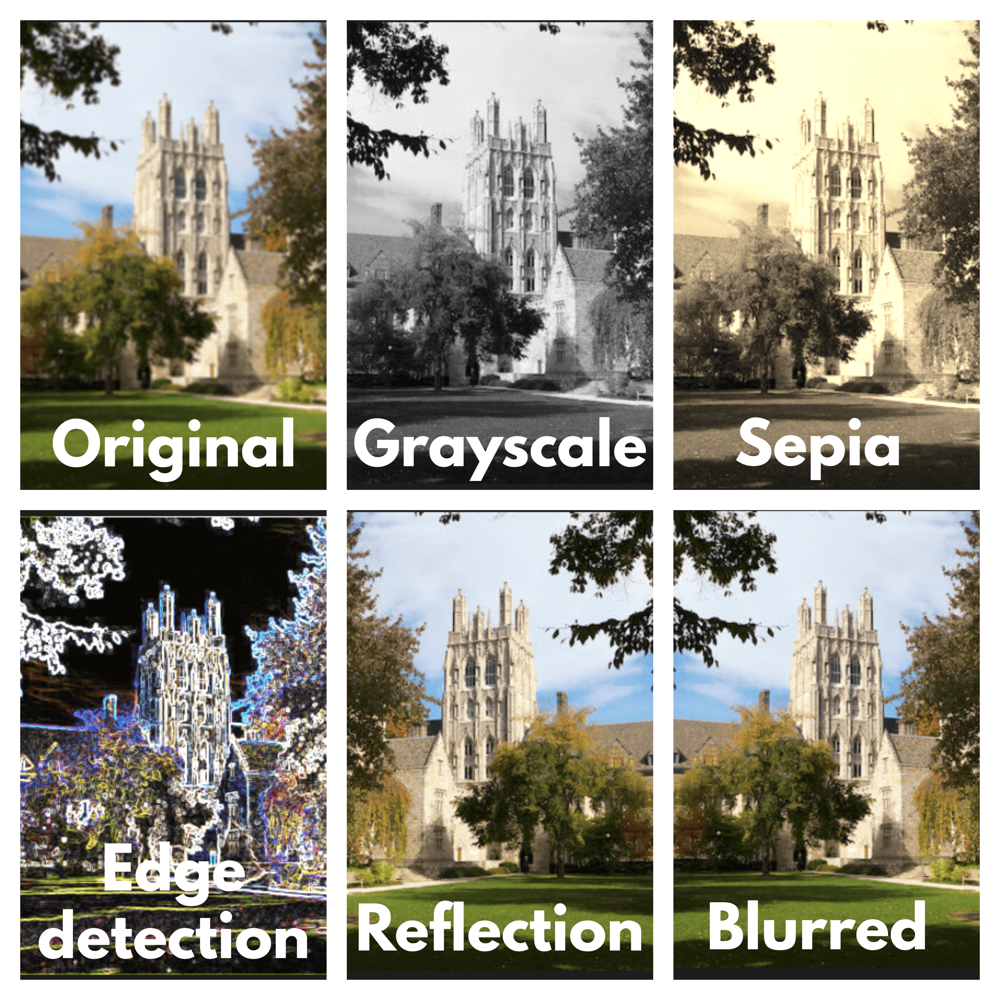
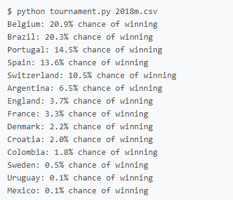

This C program applies various filters such as Grayscale,Sepia,Blur,Reflection,Edge Detection to the inputed Bitmap images and creates a new bitmap image file as ouput.
Source Code
In soccer, teams are given FIFA Ratings, which are numerical values representing each team's relative skill level. Higher FIFA ratings indicate better previous game results, and given two teams' FIFA ratings, it's possible to estimate the probability that either team wins a game based on their current ratings. Using this information as input in the form of a csv file containing the name of the team and it's rating, this python program can simulate the entire tournament by repeatedly simulating rounds until we're left with just one team. And if we want to estimate how likely it is that any given team wins the tournament, we might simulate the tournament many times (e.g. 1000 simulations) and count how many times each team wins a simulated tournament.
Source Code